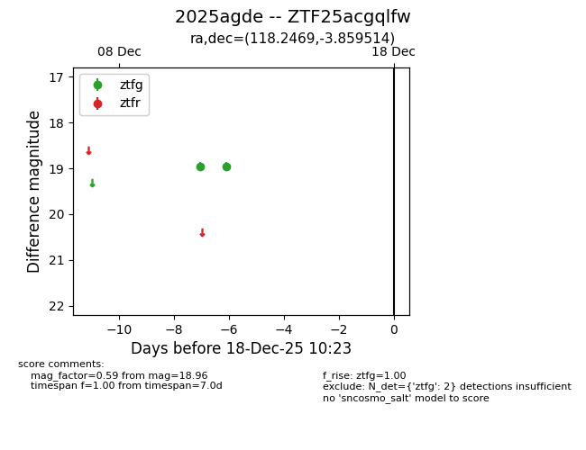
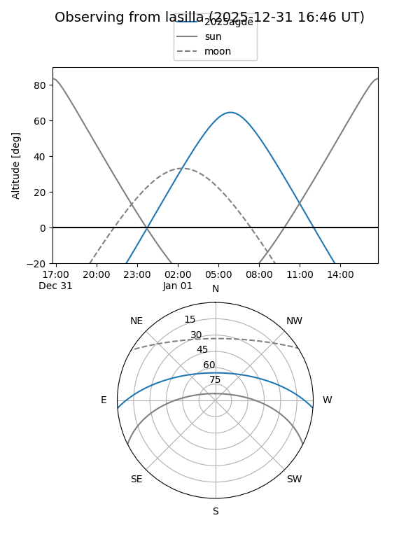
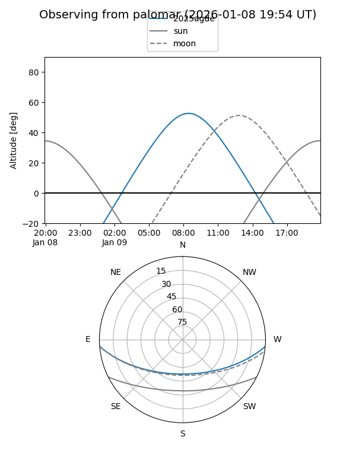
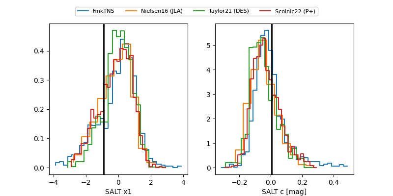

2025agde
Target 2025agde at 2025-12-31 18:00
Aliases and brokers:
FINK: link
Lasair: link
ALeRCE: link
TNS: link
YSE: link
alt names
ZTF25acgqlfw (ztf,fink_ztf)
2025agde (tns,yse)
Coordinates:
equatorial (ra, dec) = 118.2469,-3.85951
equatorial (HMS+DMS) = 07:52:59.26,-03:51:34.25
galactic (l, b) = (223.5663,+11.82516)
Flags:
Photometry:
last ztfg=19.44
4 ztfg detections
Lightcurve

Visibility


Additional plots
